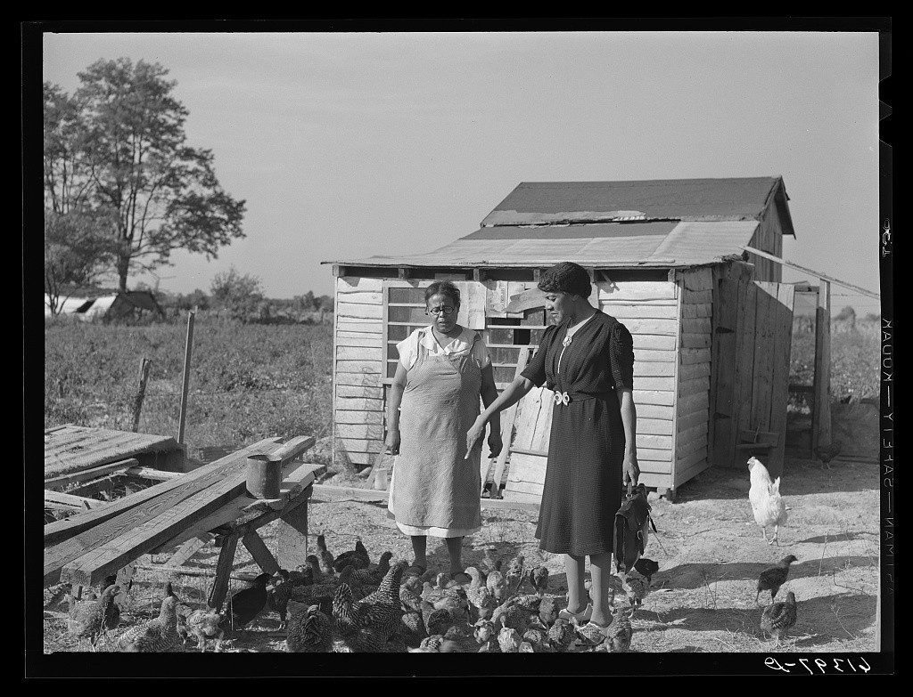

Disclosure: some links on this site are affiliate links. As an Amazon Associate I earn from qualifying purchases, at no extra cost to you.
Kitchen Scraps Hens Can Eat
Old farm flocks lived partly on kitchen scraps, and hens still love them. Keep treats small next to a complete layer feed, skip the few foods that can hurt them, and clear away leftovers so you don't feed rats too.

Mrs. Eugene Smith, wife of FSA (Farm Security Administration) borrower, in the chicken yard with Margarite Chappelle, home supervisor. Saint · Photo: Library of Congress (no known restrictions)